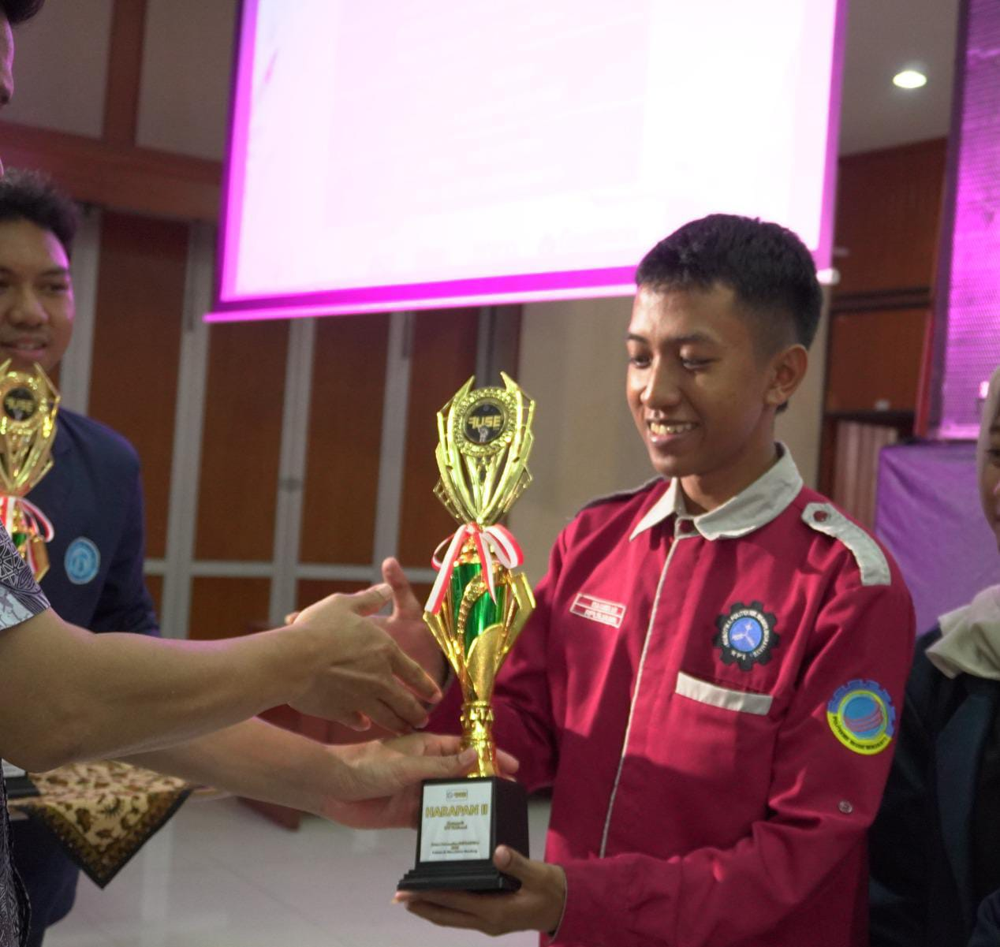

01
DOSEN PENGABDIAN
Bagus Dharmawan Hadi
Politeknik Negeri Indramayu
PENGABDIAN KEPADA MASYARAKAT
Smart Trash Bin Monitoring menghadirkan pemantauan tempat sampah yang lebih cerdas untuk lingkungan yang lebih bersih.
POLITEKNIK NEGERI INDRAMAYU · INOVASI UNTUK MASYARAKAT
ORANG-ORANG DI BALIK INOVASI
Politeknik Negeri Indramayu
S1 Terapan Teknologi Rekayasa Instrumentasi dan Kontrol

03S1 Terapan Teknologi Rekayasa Instrumentasi dan Kontrol
POLITEKNIK NEGERI INDRAMAYU
Pengabdian kepada Masyarakat
SMART TRASH BIN · MONITORING REALTIME
LANGKAH KECIL, DAMPAK BESAR
Sampahmu punya tempat. Yuk, buang dengan bijak!
KONDISI LAPANGAN
Memuat data...
Data diperbarui otomatis dari perangkat.